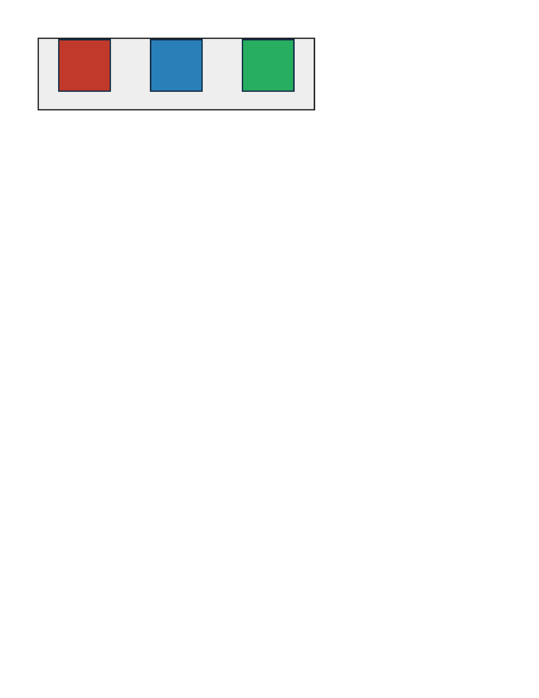
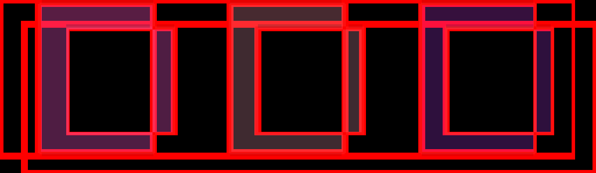
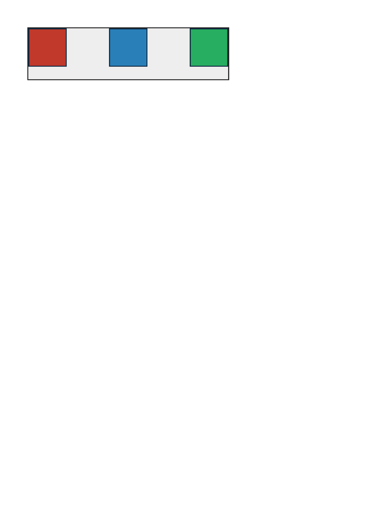
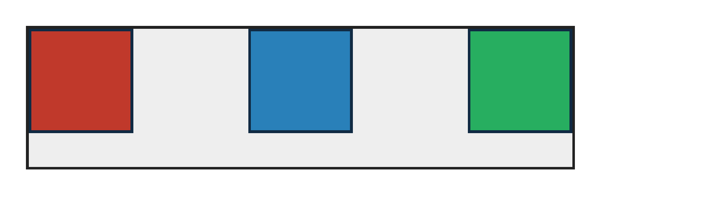
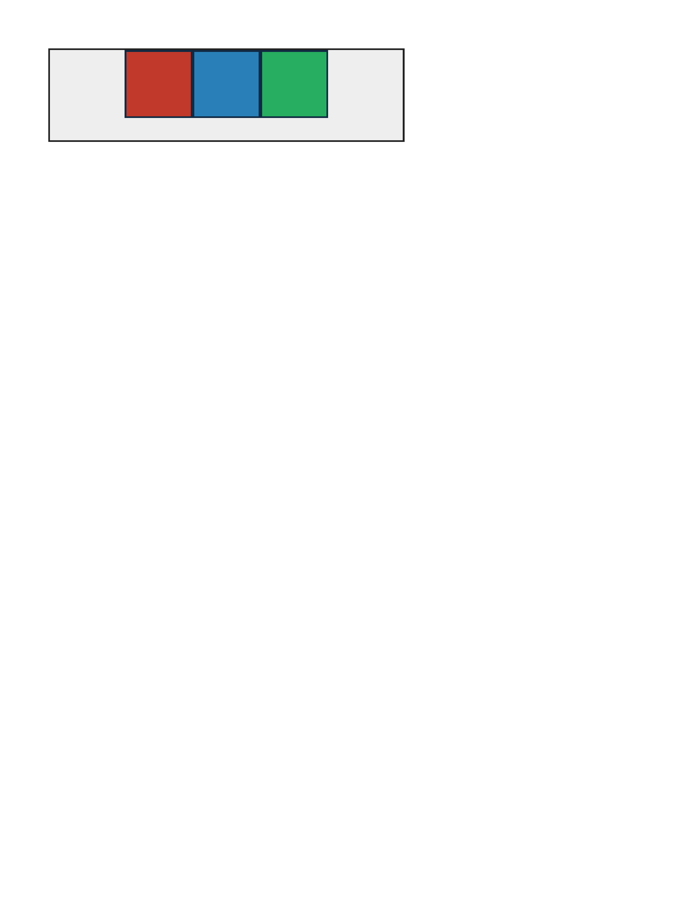
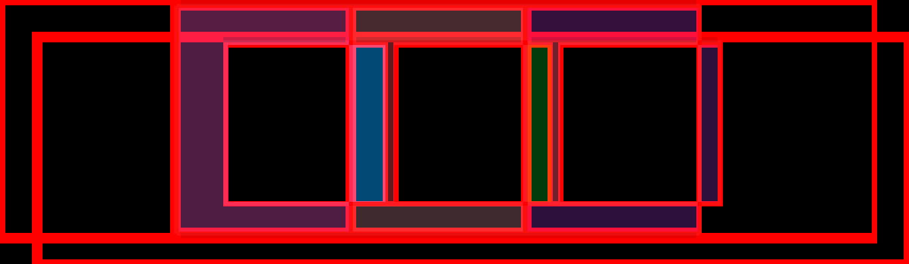

justify-content — 0.00% all categories ↑
FAIL 31.29% flexbox-justify-content-space-around · space-around · REAL



justify-content:space-around distributes items with equal space around each, so edge gaps are half the inner gaps.
FAIL 28.86% flexbox-justify-content-space-between · space-between · REAL


justify-content:space-between pins first and last boxes to the edges with equal gaps between.
FAIL 26.91% flexbox-justify-content-center · center · REAL


justify-content:center groups items centered on the main axis with equal leftover space on both sides.